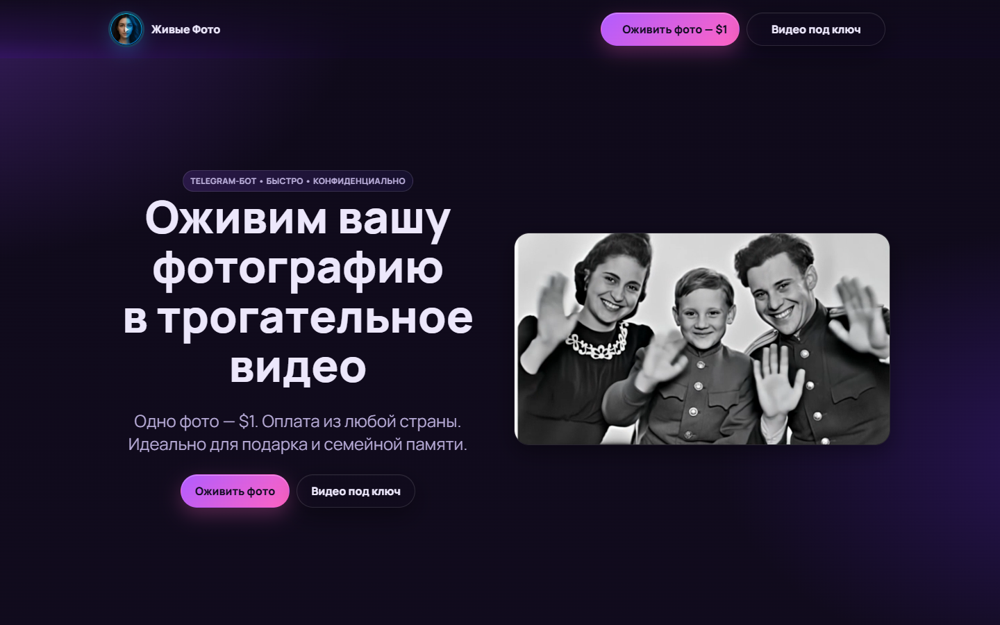
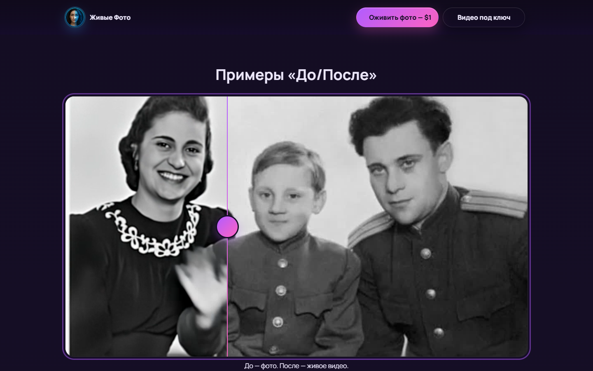
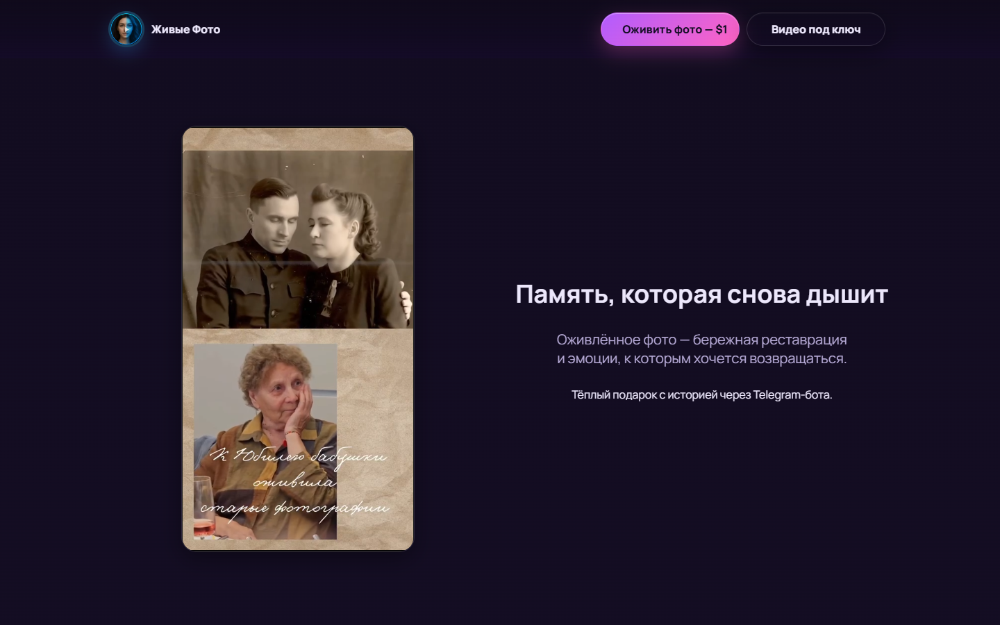
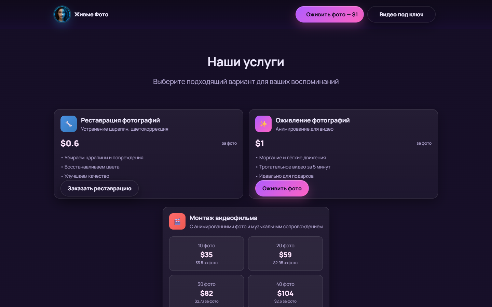

MEMORY

PHOTO ANIMATION · TELEGRAM SERVICE
Память
снова движется.
Оригинальный фиолетовый лендинг: фото, видео, сравнение и переход к Telegram.
Один кадр хранит момент.
Движение возвращает жест.
WATCH
THE FLOW
ДО / ПОСЛЕ


Видео остаётся в кадре целиком.

От реставрации до ролика под ключ.
ALIVE
PROVENANCE / QA
Verified: оригинальная композиция, три локальных видео, pointer/keyboard сравнение, услуги, отзывы и CTA. Сравнение показывает локальную согласованную пару; бот, генерация, оплата и права на исходные медиа требуют отдельного подтверждения.